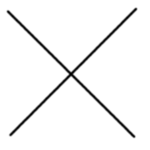
This tutorial shows you how you can do straight lines with the gimp, using a feature called the Shift Key. Straight lines are a convenient way to make things that aren't so terribly affected by the imprecision of a mouse or tablet, and to take advantage of the power of a computer to make things look neat and orderly. This tutorial doesn't use Straight Lines for complex tasks; its intended to show how you can use it to create quick and easy line effects.
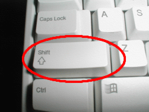 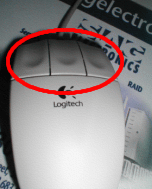
The invention called the typewriter introduced the Shift Key. You generally have 2 of them on your keyboard.
They look something like the picture on the left. They are located on the left and right sides of your keyboard.
The other invention, called the Mouse, was invented by Douglas C. Engelbart in 1970. These come in different varieties,
but always have at least one button located on them. They are located on your desk, or sometimes on a mouse pad.
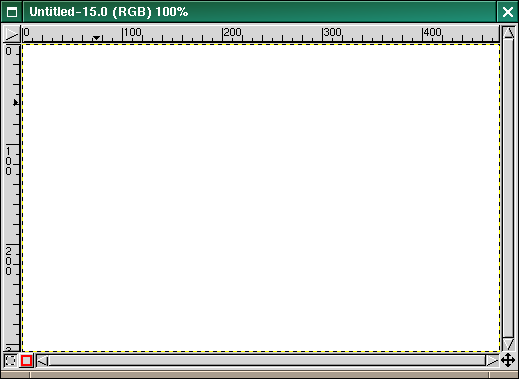
First, create a new image. Any size will do.
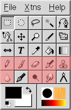
Then click on the paintbrush. Any of the red-highlighted tools on the above toolbox can do lines.
After you click the paintbrush tool, you can click the image. A single dot will appear on the screen. The size of this
dot represents the current brush size, which you can change in the Brush Dialog.
Now, lets start drawing a line. Hold down the Shift button, and keep it down.

After you have a starting point, and have held down the Shift Key, you'll see a line like above if you're running
Gimp version 1.1.x. This feature was not present in Gimp version 1.0.4. However, the next step works the same way.
Press the first button on the Mouse (the leftmost one usually) and then let it go. During that whole "click" of the
Mouse button, you need to keep the Shift Key held down.
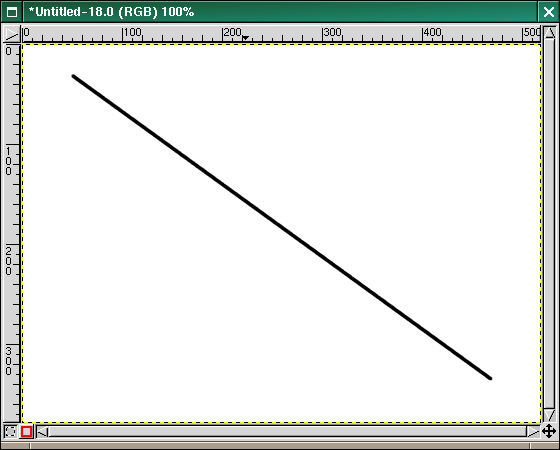
See how the line is drawn on top of the preview? This is a powerful feature of the Paint Brush. You can use it with
any of the tools shown in step 4, or even draw more line at the end of this one.
Our last step is to let go of the shift key. And there you have it. Some more examples are shown below.
Questions? Comments? Let me know.
Happy GIMPing!
Seth
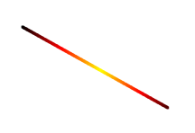
This one I turned on gradient in the Paint Brush Tool.
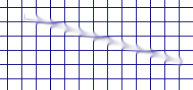
This one I rendered a grid, and then used the Smudge Tool with a low spacing and a slightly larger brush.
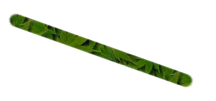
This one I used the Clone tool, and set the source to "Maple Leaves" pattern.
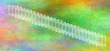
This one I rendered a plasma cloud, and used the Erase Tool with a square brush.
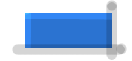
This one I used the Dodge tool on the top and left of a blue box, then used the burn tool on the right and bottom.
The original tutorial can be find Here